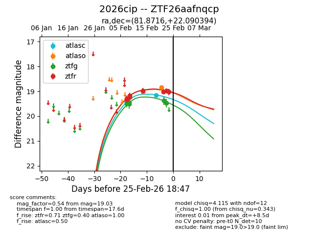
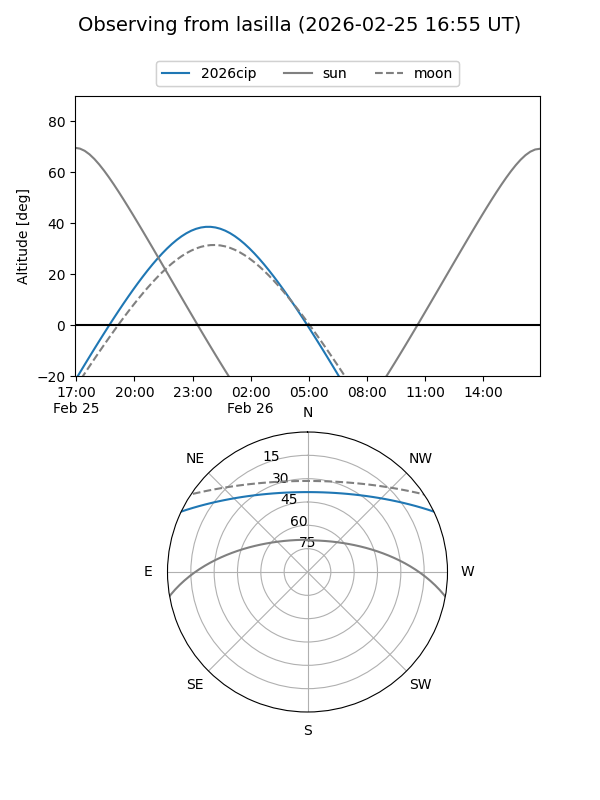
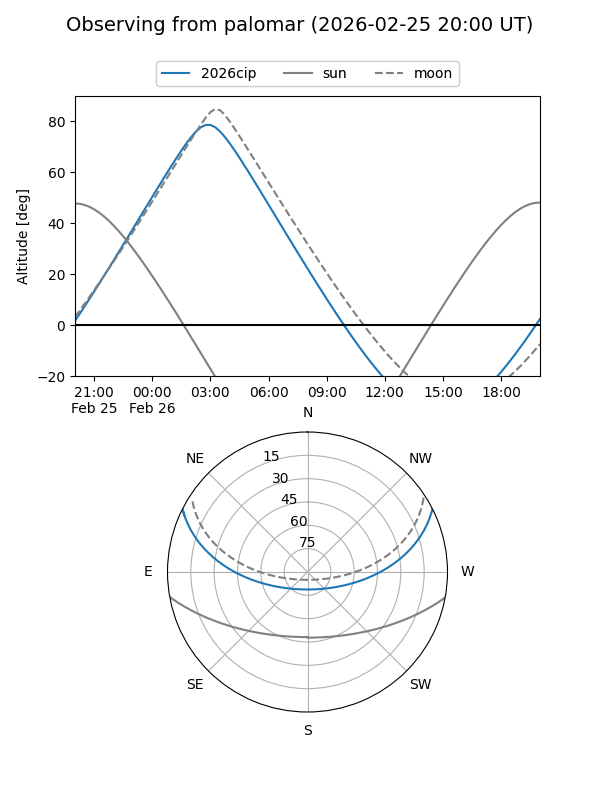
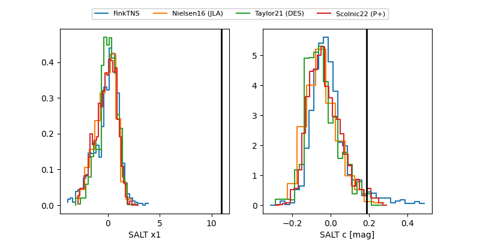

2026cip
Target 2026cip at 2026-02-25 18:49
Aliases and brokers:
FINK: link
Lasair: link
ALeRCE: link
TNS: link
YSE: link
alt names
ZTF26aafnqcp (ztf,fink_ztf)
2026cip (tns,yse)
Coordinates:
equatorial (ra, dec) = 81.8716,+22.09039
equatorial (HMS+DMS) = 05:27:29.19,+22:05:25.42
galactic (l, b) = (183.6044,-7.11640)
Flags:
Photometry:
last atlasc=19.16, atlaso=18.84, ztfg=19.48, ztfr=19.03
1 atlasc, 2 atlaso, 6 ztfg, 8 ztfr detections
Lightcurve

Visibility


Additional plots
